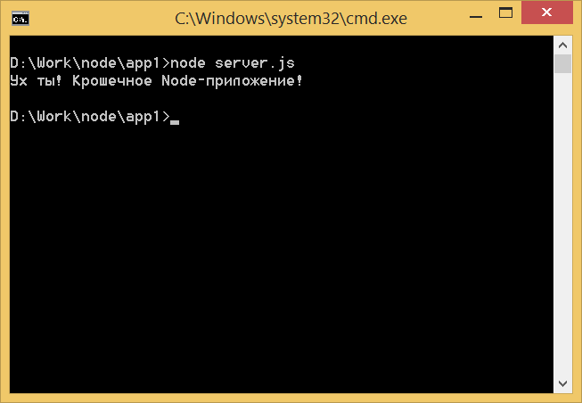

Очень простое Node-приложение
Код для этого примера вы можете взять здесь.
Node-приложения настраиваются внутри файла с именем package.json. Вам понадобится package.json для каждого создаваемого вами проекта. В этом файле можно настроить имя своего проекта, версию, хранилище, автора и все важные зависимости. Вот пример package.json:
{
"name": "node-app",
"version": "1.0.0",
"description": "The code repository for the Node booklet.",
"main": "server.js",
"repository": {
"type": "git",
"url": "https://github.com/scotch-io/node-booklet-code"
},
"dependencies": {
"express": "latest",
"mongoose": "latest"
},
"author": "Chris Sevilleja",
"license": "MIT",
"homepage": "https://scotch.io"
}Это выглядит для первого раза непомерным, но если вы разберёте строку за строкой, то увидите что много атрибутов добавлено, чтобы упростить другим разработчикам переход в этот проект. Мы ещё рассмотрим все эти разные части позже, но вот пока очень простой package.json, содержащий только необходимое.
{
"name": "node-booklet-code",
"main": "server.js"
}Это самые основные обязательные атрибуты.
main говорит Node какой файл следует использовать когда мы хотим запустить наше приложение. Назовём этот файл server.js для всех наших приложений и с него они будут начинать.
Узнать больше об атрибутах, которые могут быть определены в файлах package.json вы можете в документации.
Инициализация Node-приложения
С файла package.json начинается любое наше приложение. Может оказаться трудно вспомнить, что именно входит в package.json, так что npm сделал легко запоминающую команду, которая просто и быстро позволяет вам создать свой файл package.json. Это команда npm init. Давайте создадим пример проекта и проверим данную команду.
- Создайте папку: mkdir awesome-test
- Перейдите в эту папку: cd awesome-test
- Запустите наш проект: npm init
Команда выдаст вам несколько настроек, которые вы можете оставить по умолчанию, пустыми или установить по своему желанию. В данный момент вы можете оставить всё по умолчанию за исключением основного файла (entry point). Наш будет называться server.js.
Вы можете видеть, что новый файл package.json создан и у нас появился первый проект на Node!
Поскольку теперь у нас есть файл package.json, мы можем перейти в командную строку и набрать node server.js для запуска Node-приложения! Будет просто выдана ошибка, так как мы не создали файл server.js, с которого должно начинаться наше Node-приложение. Не очень приятно видеть ошибку в первый раз при запуске Node-сервера! Внесём изменения и сделаем приложение, которое что-то делает.
Сейчас нам нужно создать файл server.js. Единственное, что мы в нём сделаем — выведем некоторую информацию с помощью console.log() — это путь, которым мы вываливаем информацию в консоль. Мы собираемся использовать его для отправки сообщения, когда запускаем наше Node-приложение.
Вот содержание нашего файла server.js.
console.log('Ух ты! Крошечное Node-приложение!');Теперь мы можем запустить наше приложение, перейдя к командной строке и набрав:
$ node server.jsМы должны увидеть наше сообщение, выведенное в консоли. Помните, что поскольку Node это JavaScript на сервере, консоль тоже будет на нашем сервере. В этом отличие от консоли на клиентской стороне, которую мы найдём в инструментах разработчика нашего браузера.

Перезапуск Node-приложения при изменении файла
По умолчанию, команда node server.js запустит наше приложение, но оно не будет перезагружаться после изменения файла. Это может оказаться утомительным в процессе разработки, поскольку каждый раз после внесения изменений мы должны делать остановку и перезапуск.
К счастью, есть npm-пакет, который будет следить за изменением файла и перезагружать сервер, когда изменения обнаружены. Этот пакет называется nodemon и для его установки просто перейдите в командную строку и наберите:
$ npm install -g nodemonМодификатор -g означает, что этот пакет будет установлен глобально для вашей системы. Теперь, вместо node server.js, мы можем использовать:
$ nodemon server.jsСмело переходите в свой файл server.js и вносите изменения. Затем смотрите как происходит магия — приложение перезапускается само!
Мы будем использовать nodemon в остальной части этого руководства.

Все материалы сайта доступны по лицензии Creative Commons «Attribution-NonCommercial» («Атрибуция — Некоммерческое использование») 4.0 Всемирная, если не указано иное.